Black Rock City · Est. 2026
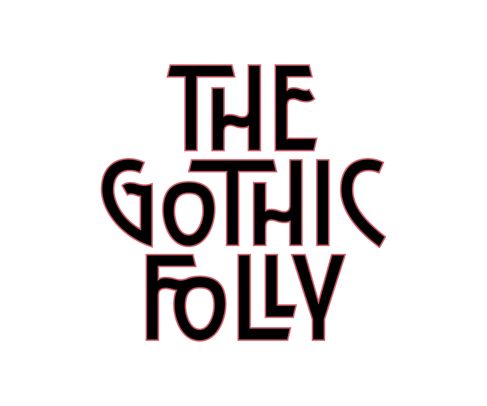
A cathedral risen from the playa — open to all who wander beneath its arches.
76% funded
Now Tax-Deductible — We're fiscally sponsored by Five Ton Crane, a registered 501(c)(3) nonprofit, which means your donation is tax-deductible where permitted.
If your employer offers a matching program, your contribution can often be matched 1:1 or more — worth checking before you give.
Industry City
Oct 23, 24
Industry City
Oct 30, 31
Rising sixty feet above the expanse of the playa, the Gothic Folly recontextualizes the enduring emotional power of sacred architecture through scaffolding and light. Inspired by the soaring arches, verticality, and intricate tracery of Gothic forms, the installation reaches skyward with utilitarian materials as a monument to wonder.
During the day, its structure frames vast stretches of sky and casts shifting shadows across the desert floor. At night it becomes a beacon on the horizon - emitting light, music, and welcoming you in.
What was once designed for doctrine becomes a space for collective devotion: devotion that is directed outward toward one another as opposed to upward towards a single authority. Devotion to art, to community, to curiosity, to celebration, to whimsy. It asks what a cathedral might be when everyone is invited inside, and where everything is sacred.
Created by two multidisciplinary artists whose backgrounds span architecture, Broadway carpentry, scenic design, graphic design, printmaking, painting, street art, and fashion, the Gothic Folly is the culmination of a lifelong fascination with the emotional power of space.
At the heart of the project is a belief that architecture is a universal language - one that transcends nationality, culture, religion, and spoken words. Long before we understand a place intellectually, we feel it. We are drawn upward by height, humbled by scale, comforted by light, and transformed by beauty.
Built in one of the world's most impermanent landscapes and designed to alter everyone who enters it, the work creates a place for gathering, celebration, reflection, and awe. We are inviting people to step into a cathedral that is theirs, and to feel whatever it is that arises.
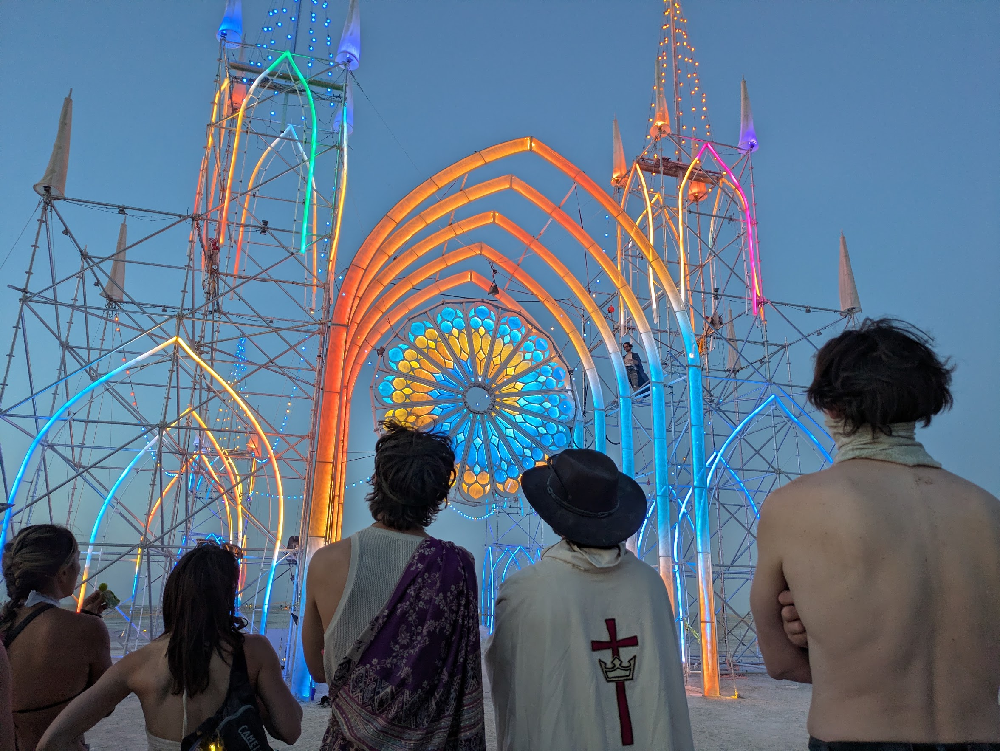
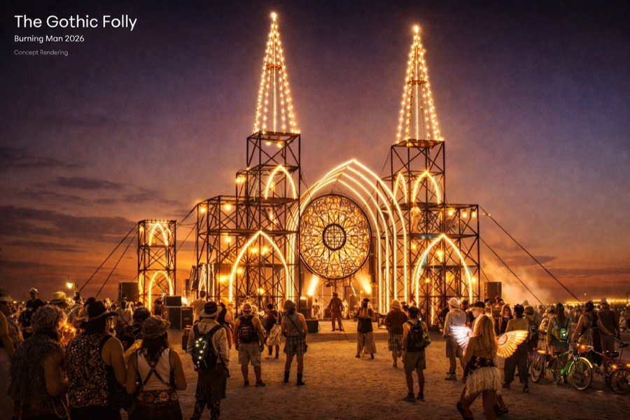
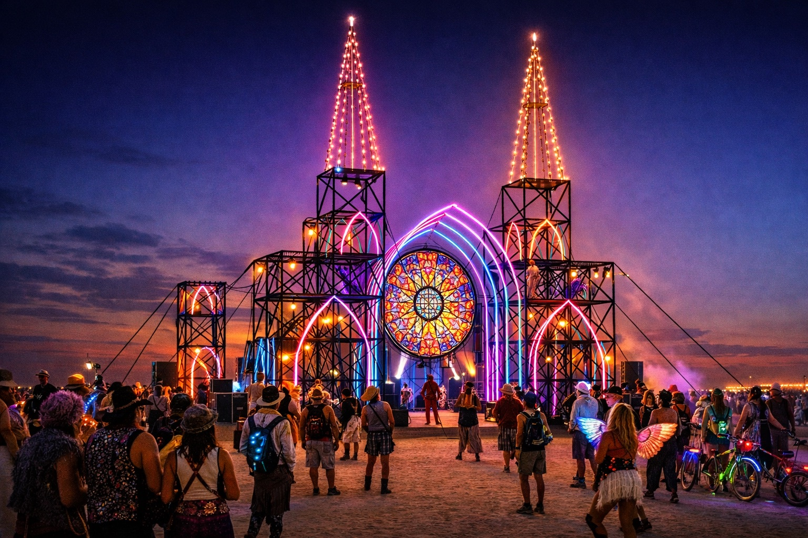
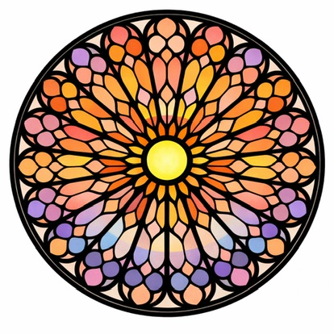
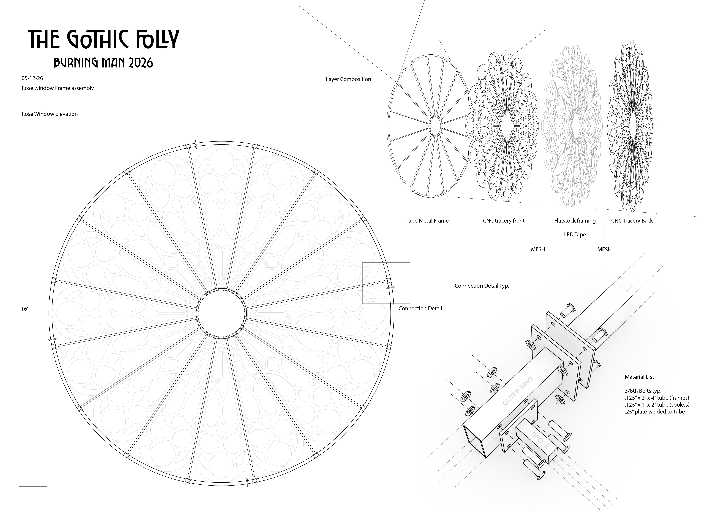
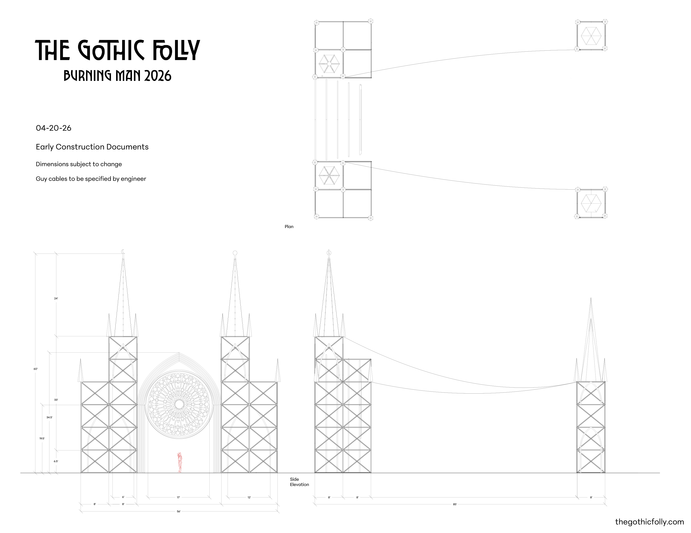
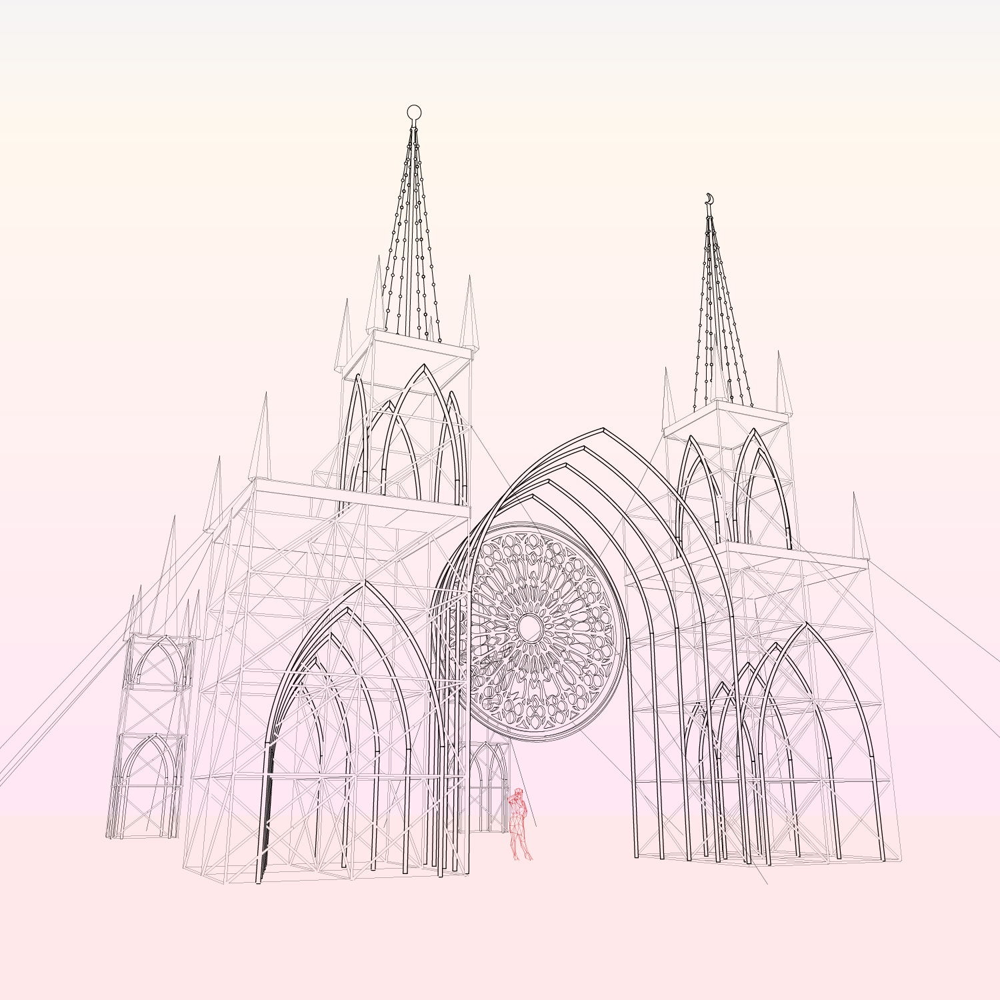
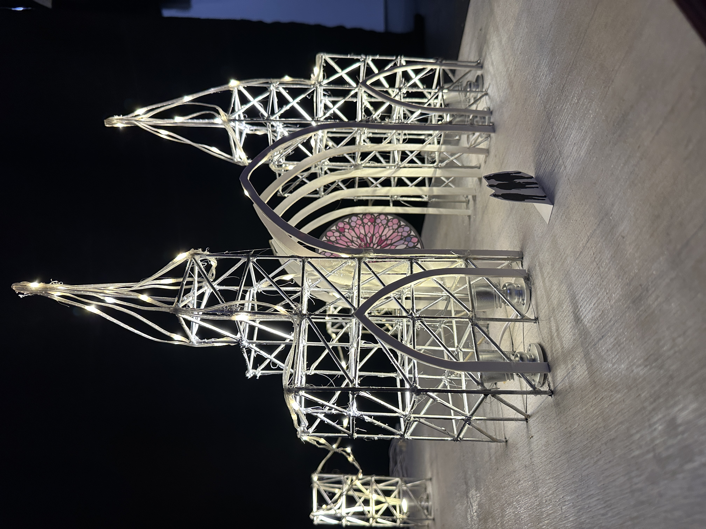
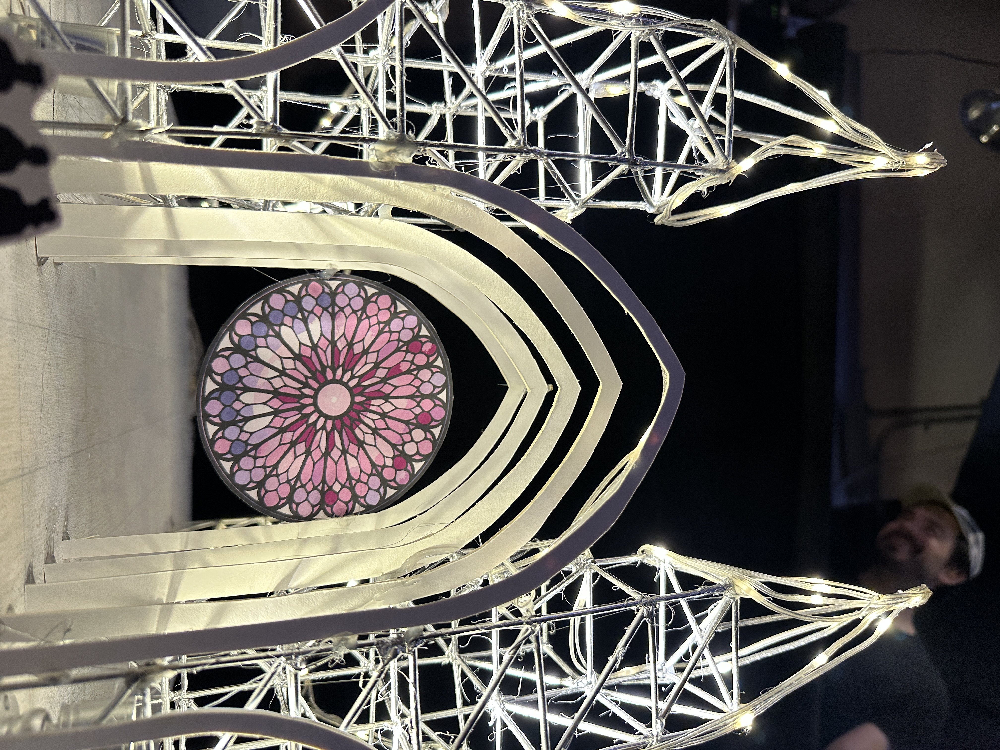
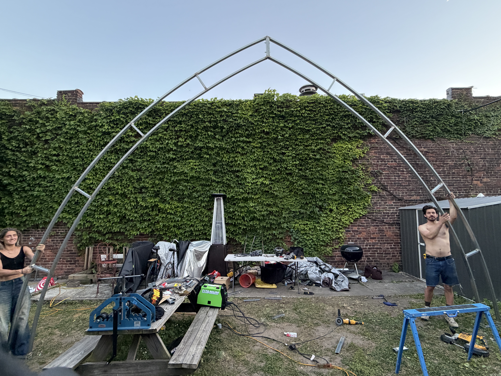
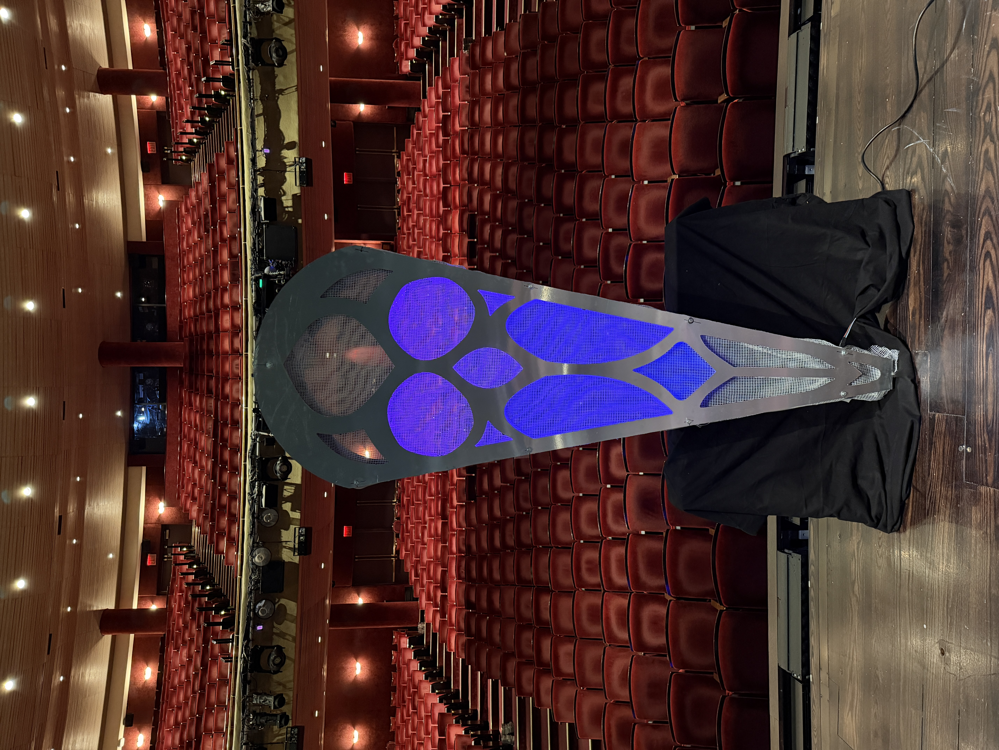
Follow our progress on Instagram: @thegothicfolly
The Gothic Folly is built to amplify the culture of the playa — and we're actively seeking sound camps and organizations to bring that vision to life.
We're looking to partner with artists, DJs, and sound collectives to host events and sets within our sculpture. The Gothic Folly provides the architectural space and a fully programmable LED light system that artists can use as their canvas — creating immersive, synchronized experiences.
If you're a sound camp or organization interested in collaborating, we'd love to hear from you.
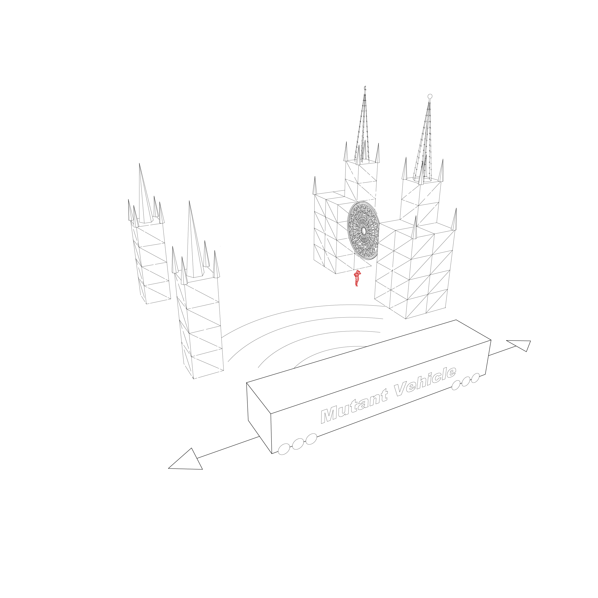
The Gothic Folly's 35,900 LEDs will come alive with shows and sequences built by a community of makers — experts and beginners alike. You provide the inspiration, we provide the tools.
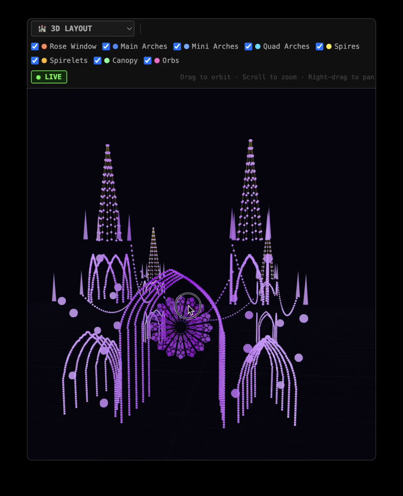
We need folks in NYC to fabricate, test, and program everything — and another group to set it up on the playa. Whether you're a metal fabricator, LED wizard, rigger, or someone who just shows up and makes things happen, there's a place for you here.
Help with metal fabrication, LED soldering, lighting programming, and our summer test build. You don't need to go to Burning Man to be part of this.
Arrive build week and help raise a 60-foot cathedral from the dust. Scaffolding, rigging, LEDs, MOOP, camp ops — all hands welcome.
Core playa builders can camp with us at Deli Art Support, adjacent to NYC Deli. Potable water, showers, private porto, camp kitchen, shade, power in every tent, and more — for roughly $450.
Questions? Reach us at thegothicfolly@gmail.com
The Gothic Folly was raised by many hands. Thank you to everyone who built, wired, rigged, cooked, hauled, and dreamed it into being.